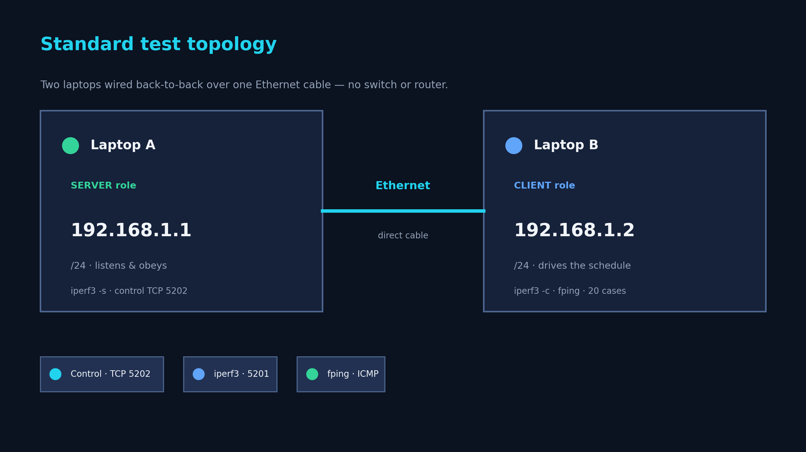
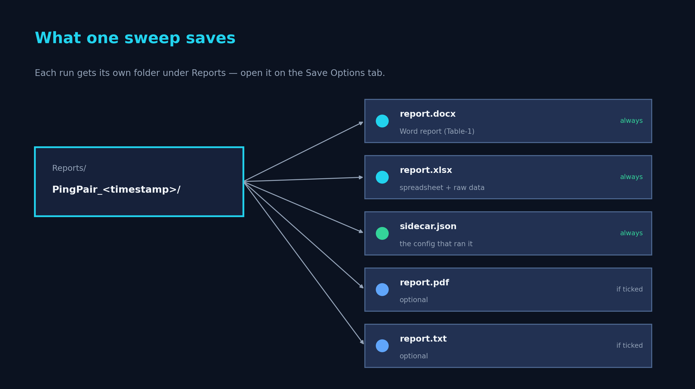
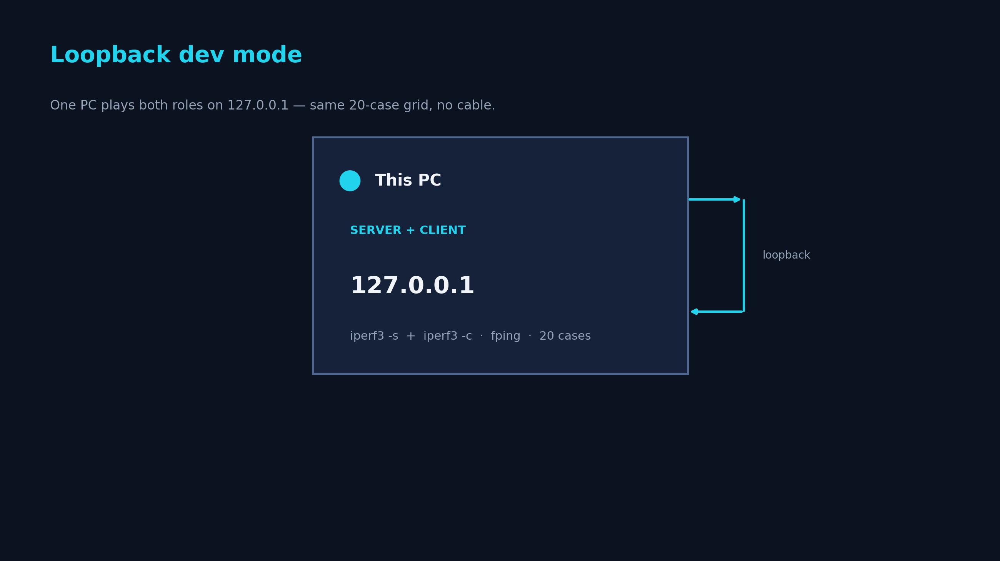

From download to your first filed report
PingPair runs the full 20-case latency + throughput sweep between two Windows machines and writes a ready-to-file Word / Excel / PDF report. This guide takes you the whole way.
01 Install
PingPair ships as a self-contained Windows build — no Python or other dependency to
install. The bundle carries its own runtime plus fping and iperf3.
- Download the latest release (a
.zipfrom GitHub Releases). - Right-click the
.zip→ Extract All… to a folder you can write to (e.g. your Desktop). Do this on both machines. - Open the extracted folder and run
PingPair.exe.
SmartScreen warning? The build is unsigned, so Windows may show a "Windows protected your PC" prompt on first run. Click More info → Run anyway. To be sure you have the genuine file, verify its SHA-256 against the value on the download page first.
Administrator. PingPair needs to run elevated — it sets static IPs and adds
firewall rules through Windows' own netsh, and it asks before every change. It will
request elevation (a UAC prompt) automatically when you launch it.
02 Connect the two PCs
PingPair measures the link between two machines: one plays Server, the other Client. Connect them on a dedicated point-to-point LAN.

192.168.1.1, Client 192.168.1.2.- Two physical laptops: join them with a single Ethernet cable (a crossover cable isn't needed on modern NICs) or through a small switch.
- Two virtual machines: attach both to the same internal / LAN-segment virtual network — not NAT, not Bridged.
03 IPs & firewall
Each side needs a static IP on the test subnet, and Windows Firewall has to allow the test traffic. PingPair's Setup tab checks all of this for you and offers one-click fixes — it never changes the host silently.
| Role | IPv4 | Subnet |
|---|---|---|
| Server | 192.168.1.1 | 255.255.255.0 |
| Client | 192.168.1.2 | 255.255.255.0 |
- Launch PingPair on each machine. On first launch it auto-detects its role from the bound IP (and falls back to a safe default with a heads-up banner if neither matches).
- Open the Setup tab. Any row in yellow or red has a fix button — each one shows
the exact
netshcommand it will run and asks for confirmation:- Set the correct IP — assigns the role's canonical static IP.
- Firewall rules — allows ICMP echo, iperf3 (5201), and the control channel (5202).
- Disable Wi-Fi — if Wi-Fi is live on the test subnet it can corrupt the measurement; this turns it off and re-enables it when you close the app.
- When every row is green on both machines, you're ready to run.
Need a different addressing scheme (e.g. a 10.x.x.x LAN, or a router between the two
sides)? The Setup tab has a per-PC custom IP override, and the Config tab lets you
change the Server/Client IPs, ports, protocol, payloads, bandwidths, and durations — then save it
as a reusable profile.
04 Run a sweep
- On the Server, the listener starts automatically — leave the window open. It shows Listening on 192.168.1.1:5202.
- On the Client, open the Run tab. You'll see a 20-row grid (payload × bandwidth), each row ticked. Keep them all for the full canonical sweep, or untick rows / use the per-payload and per-bandwidth quick toggles to run a subset.
- Press Run full sweep. The Client connects to the Server and walks every case in
sequence — latency and loss via
fping, throughput / jitter / loss viaiperf3— filling in the table live, with charts and a duration-aware ETA. - When it finishes (≈16 minutes for the full 20 cases), PingPair saves the report set and shows a summary. Press Stop any time to end early and cleanly.
Continuous (multi-segment) mode runs the same grid across several physical segments in one walk-through — e.g. cab-to-cab on a train — and rolls them all into one consolidated report with cross-segment comparison tables.
05 Read the report
Every sweep writes a self-contained folder under Reports/ with a Word document, an
Excel workbook, and a .json sidecar (PDF and TXT optional). The headline is the
8-column performance table; an analysis appendix adds per-metric charts and breakdowns.

- Performance Metrics table — one row per case: payload, bandwidth pushed, throughput received, jitter, loss, and min / avg / max latency.
- Per-case detail — status, return codes, error notes, and the exact
iperf3/fpingcommand used for that case. - Title block — run ID, timestamps, both IPs, tool versions, plus any test-record metadata you filled in (technician, customer, hardware serial, environment, record ID).
- Analysis tab — load past runs back in to overlay, compare, and diff them, then export a comparison report.
See a full 20-case example: sample report (PDF) · Word (.docx).
06 Try it on one PC (Loopback)
No second machine handy? Switch the role to Loopback on the Setup tab and PingPair
runs both ends on 127.0.0.1. It's the quickest way to see the full workflow and a real
report without any cabling or IP setup.

07 Troubleshooting
| Symptom | Fix |
|---|---|
| Setup tab: Local NIC IP is red (FAIL) | The static IP isn't set or the NIC is on the wrong subnet. Click the row's Set the correct IP button (it falls back to opening Windows adapter settings if it can't detect the adapter). |
| Firewall rows stay yellow after pressing Fix | PingPair isn't elevated. Close it and relaunch — accept the UAC prompt so it can add the
netsh rules. |
| Orange banner: "IP doesn't match the saved role" | The bound IP no longer matches the role (NIC reset, DHCP, moved LAN). PingPair never flips the role behind your back — either click Set the correct IP, or change the role on the Setup tab. |
| Phantom packet loss in the report | Wi-Fi is live on the test subnet and Windows is routing some packets out the wrong NIC. Use the Setup tab's Disable Wi-Fi fix (it's re-enabled when you close the app). |
| A 30 s case takes ~48 s | Expected — Windows' ~15.6 ms timer granularity stretches the per-packet interval. The progress bar and ETA already account for it. |
Sweep finished but no files in Reports/ |
Auto-save is off (the default) and you clicked Skip on the save dialog. Click Save report now on the Save Options tab — the result stays in memory until the next sweep starts. |
08 FAQ
Does PingPair phone home or collect any data?
No. It runs entirely on your local network. The only outbound request it ever makes is an optional check for its own updates against GitHub Releases — and that's it. No analytics, no accounts.
Why does it need Administrator?
To set static IPs and add Windows Firewall rules for the test traffic, via Windows' own
netsh. It always shows the exact command and asks before making a change, and it
reverts the Ethernet adapter to DHCP when you close it.
Is it free? Is it open source?
It's free to use for your own network testing. The full source is published on GitHub so you can inspect exactly what it does, but it is not open source — it's released under a proprietary license (see LICENSE), which permits use but not redistribution or modification.
How do I update?
Open the About tab → Check for updates. PingPair downloads the new build from GitHub Releases, verifies its SHA-256, swaps the install, and relaunches. Your settings and saved reports are preserved.
Can I change the test grid?
Yes — the Config tab is a full test-plan editor. Override payloads, bandwidths, duration, protocol,
IPs, ports, and fping flags, and save named .json profiles.
Still stuck? Open an issue on GitHub.